Un thème de l'épreuve de mathématiques (U41, coefficient 2) du BTS Opticien-Lunetier. Sur cette page : 3 définitions à savoir et 3 questions corrigées.
Probabilité qu'un événement B se réalise sachant que A est réalisé : P_A(B) = P(A ∩ B) / P(A), avec P(A) non nulle.
À savoir par cœur
Formule des probabilités totales
Probable
Utilisée dans les sujets 2016, 2017, 2022, 2023
Si A et son contraire Ā partagent toutes les issues, P(B) = P(A ∩ B) + P(Ā ∩ B).
Pour comprendre : Sur un arbre pondéré, on additionne les probabilités de tous les chemins qui mènent à B.
À savoir par cœur
Événements indépendants
Probable
Utilisée dans le sujet 2018
Deux événements A et B sont indépendants si P(A ∩ B) = P(A) × P(B).
Pour comprendre : Savoir que l'un est réalisé ne change pas la probabilité de l'autre.
Trois questions corrigées
Cherche d'abord ta réponse, puis ouvre la correction.
Type BTS 2016 · Niveau facile
Dans un magasin, 40 % des verres vendus sont progressifs (P). 75 % des progressifs ont un antireflet (R), contre 50 % des autres verres. Quelle est P(P ∩ R) ?
0,75
0,30
0,40
0,60
Voir la correction de la question 1
Réponse B. 0,30
On suit la branche P puis R de l'arbre : P(P ∩ R) = P(P) × P_P(R) = 0,4 × 0,75 = 0,30.
Type BTS 2022 · Niveau moyen
Même magasin (40 % progressifs dont 75 % avec antireflet, 60 % autres dont 50 % avec antireflet). Quelle est la probabilité P(R) qu'un verre ait un antireflet ?
0,625
1,25
0,60
0,30
Voir la correction de la question 2
Réponse C. 0,60
Formule des probabilités totales : P(R) = P(P ∩ R) + P(P̄ ∩ R) = 0,4 × 0,75 + 0,6 × 0,5 = 0,30 + 0,30 = 0,60. Piège : faire la moyenne de 75 % et 50 % (0,625) oublie le poids de chaque branche.

Type BTS 2023 · Niveau moyen
Un verre vendu a un antireflet. Quelle est la probabilité que ce soit un progressif ? (P(P ∩ R) = 0,30 et P(R) = 0,60)
0,30
0,75
0,40
0,50
Voir la correction de la question 3
Réponse D. 0,50
On cherche P_R(P) (« P sachant R ») = P(P ∩ R) / P(R) = 0,30 / 0,60 = 0,50. Piège : 0,75 est P_P(R), l'inverse de ce qu'on demande.
Le QCM compte 5 questions sur ce thème. Chacune est corrigée et expliquée, et celles que tu rates reviennent toutes seules à 1, 3, 7, 14 et 30 jours.